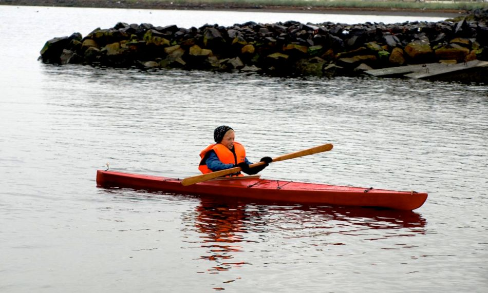

Kidarka by Hjalti Jóhannesson (IS)
Menu
Previous Page
Next Page

Alfred Steinmar Hjaltason (age 10) from Akureyri, Iceland paddles his new Kidarka. He reports that the kayak is stable and easy to handle.